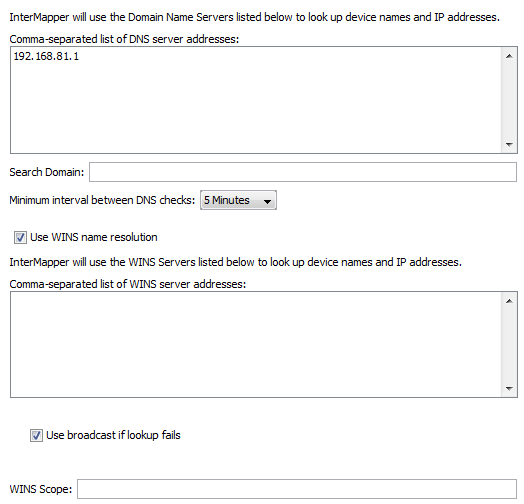

Use the DNS/WINS Settings section to specify the DNS server(s) and WINS server(s) that InterMapper uses. InterMapper uses your current DNS servers as its default.
InterMapper can use one or more Domain Name Service servers (DNS) to convert
DNS names to addresses and back. InterMapper checks the listed DNS server(s)
at regular intervals to make sure that the DNS name and IP address for a device
match.
When you start InterMapper on a MacOS X or Windows machine, the DNS servers specified by the current network configuration are used. On Unix machines, you must enter one or more DNS server addresses manually.
The DNS addresses are optional: if the preference is empty, InterMapper does not attempt to make DNS <-> IP address conversions.
For example, when InterMapper polls a device that has a name assigned, it looks up the corresponding IP address in the DNS. If the resulting address has changed since the device was added to a map, InterMapper logs an error message.

DNS/WINS Settings pane.
Set DNS Monitor preferences as follows:
You can specify one or more WINS servers that InterMapper will use for WINS lookups. InterMapper can also fall back to broadcast lookups for WINS/NetBIOS name lookups. Unless instructed by your network administrator, you should usually leave the WINS Scope blank.